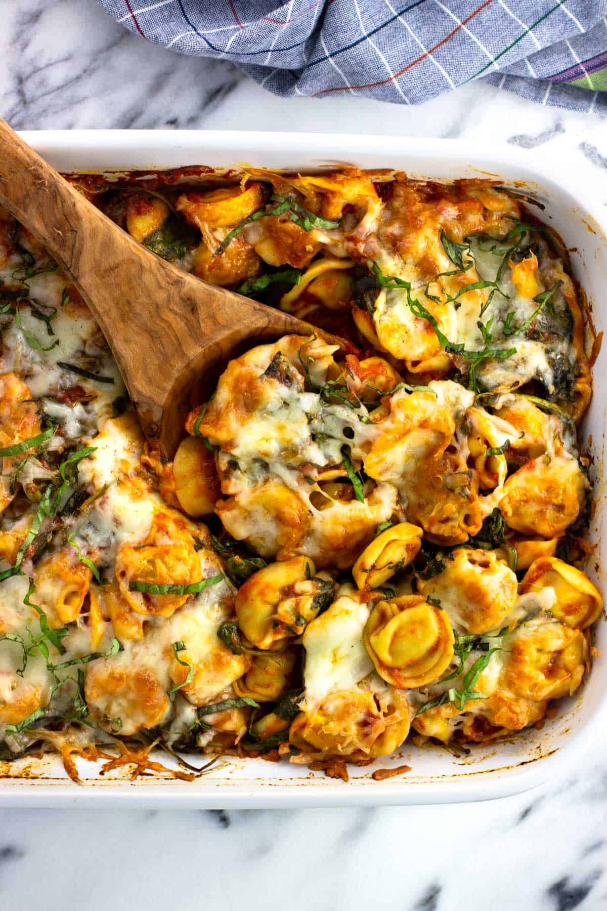

Pesto Tortellini Bake

Description
This 4-ingredient pesto tortellini bake packs a lot of flavor for very little efforta package of tri-color cheese tortellini, a smidge of prosciutto, prepared pesto, and shredded mozzarella are all you need. It's a nice weeknight baked pasta to serve with a green salad.
Ingredients
- 1 (9 ounce) package tri-color cheese tortellini
- 1 cup prepared pesto
- 2 slices prosciutto, chopped
- 1 cup shredded mozzarella cheese, divided
Directions
- Gather all ingredients. Preheat the oven to 350 degrees F (180 degrees C).
- Fill a large pot with lightly salted water and bring to a rolling boil; stir in tortellini and return to a boil. Cook uncovered, stirring occasionally, until tortellini float to the top and the filling is hot, about 3 minutes. Drain.
- Stir tortellini, prosciutto, pesto, and 1/2 cup mozzarella together in a large bowl.
- Pour into a baking dish. Sprinkle remaining mozzarella over the top.
- Bake in the preheated oven until cheese is melted and golden, about 10 minutes. Serve warm.